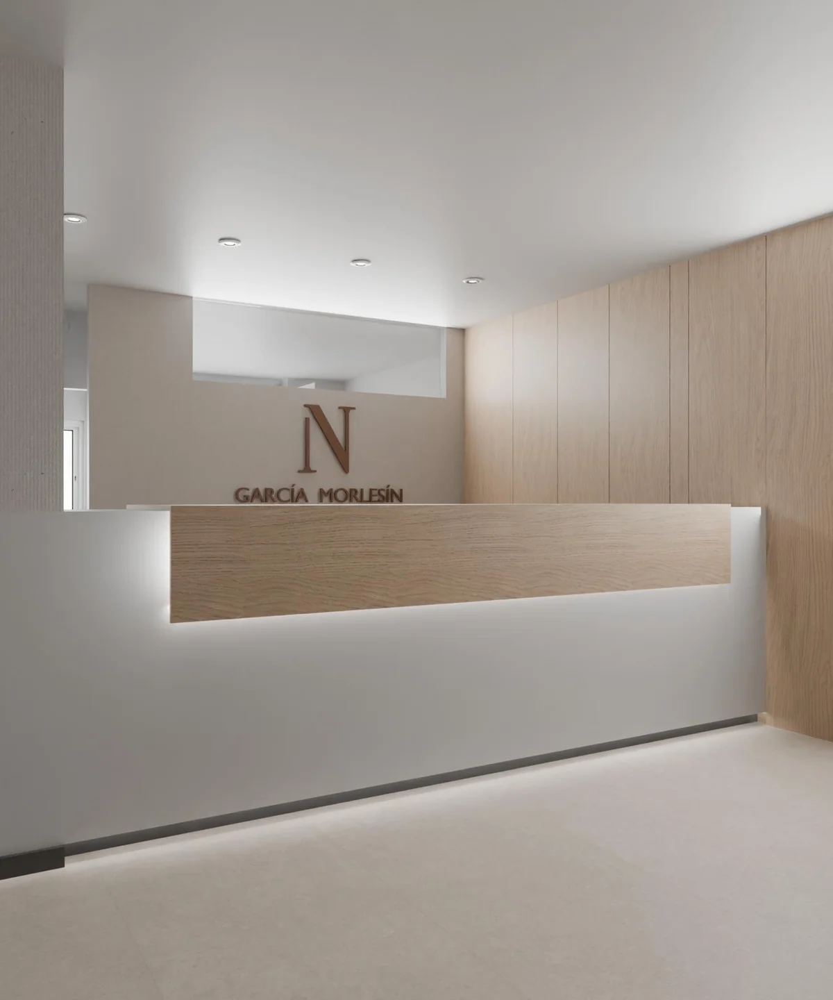

Notaría en Sevilla Este
Asesoramiento notarial con cercanía, rigor y modernidad al servicio del ciudadano.

Una notaría en Sevilla Este preparada para todas sus necesidades.
Combinamos el rigor jurídico de la profesión notarial con un trato cercano y la tecnología que hoy hace más ágiles los trámites. Cada cliente, cada trámite, recibe la atención que merece.
Nuestra función notarial: cuatro principios.
Cuatro principios que guían cada actuación en nuestro despacho de Sevilla Este.
Cercanía
Atendemos a cada persona como lo que es: alguien con una decisión importante. Escuchamos antes de redactar.
Profesionalidad
Rigor jurídico, estudio cuidadoso y respuestas claras. La función notarial exige la máxima diligencia.
Confidencialidad
Cuanto se trata en la notaría queda protegido por el secreto profesional. Su tranquilidad es parte del servicio.
Modernidad
Videofirma, Portal Notarial y comunicación electrónica para agilizar trámites sin restar seguridad jurídica.
Servicios notariales en Sevilla Este.
Compraventas, herencias, sociedades, poderes, actas, pólizas y videofirma con plena seguridad jurídica en Sevilla Este.
Compraventas e inmobiliario
Compraventas, hipotecas, obras nuevas, divisiones.
Ver detalleHerencias y testamentos
Testamentos, donaciones, declaraciones de herederos.
Ver detalleFamilia y matrimonio
Capitulaciones, parejas de hecho, divorcios.
Ver detalleSociedades y mercantil
Constitución, modificaciones, capital, disoluciones.
Ver detallePoderes
Generales, especiales, preventivos, autocuratela.
Ver detalleActas notariales
Manifestaciones, presencia, depósito, titularidad.
Ver detallePólizas mercantiles
Crédito, préstamo, leasing, renting, avales.
Ver detalleVideofirma · Portal Notarial
Escrituras por videoconferencia y copias CSV.
Ver detalleNo hay trámites pequeños: hay decisiones importantes para quien las firma.María Ángeles García Morlesín · Notaria
La notaría de Sevilla Este, pensada para usted.
Tras una sólida trayectoria notarial, María Ángeles García Morlesín abre las puertas de su despacho en Sevilla Este con un compromiso firme: que cada cliente salga sabiendo exactamente lo que firma.
Entiende la función notarial como un oficio que va mucho más allá de autorizar documentos. El notario, como funcionario público y profesional del Derecho, asesora con imparcialidad, vela por la legalidad y da forma jurídica a la voluntad de las partes.
Le mueve la pasión por resolver problemas. Cada cliente llega con una situación distinta —una compra largamente esperada, una herencia delicada, una empresa que arranca, un poder que urge— y su compromiso es atenderla con la atención que merece.
Conocer la notaríaVideofirma notarial y Portal Notarial del Ciudadano.
Firme determinadas escrituras y pólizas por videoconferencia ante notario, con la misma seguridad jurídica que la firma presencial. La firma se realiza a través del Portal Notarial del Ciudadano, plataforma oficial del Consejo General del Notariado.
A través del Portal accederá a copias autorizadas electrónicas con Código Seguro de Verificación (CSV) y podrá solicitar trámites a distancia.
Firma sin desplazamiento
Firme desde cualquier lugar mediante videoconferencia, sin necesidad de acudir físicamente al despacho.
Misma validez jurídica que la presencial
La escritura firmada por videoconferencia tiene el mismo valor legal que la firmada presencialmente ante notario.
Identificación electrónica reconocida
Acceso a través del Portal Notarial del Ciudadano con identificación electrónica reforzada (Cl@ve, certificado digital, DNIe).
Cómo trabajamos en la notaría.
Contacte y exponga su caso
Plantéenos por teléfono, correo o formulario qué trámite necesita. Le indicaremos qué documentación reunir.
Acuda o firme por videofirma
Le atendemos presencialmente en Sevilla Este o, cuando el trámite lo admite, por videoconferencia.
Reciba su escritura
Tramitamos copias y comunicaciones a registros para que el asunto quede cerrado con agilidad.
Documentación notarial: qué debe aportar.
Cada trámite tiene requisitos propios, pero hay documentos básicos que solemos solicitar en la mayoría de casos. Al concertar la cita le indicaremos qué necesita aportar en su situación concreta.
Toda la información se trata con la confidencialidad propia del secreto profesional notarial.
Consultar mi casoDocumento de identidad
DNI, NIE o pasaporte en vigor de todas las partes intervinientes.
Escrituras anteriores
Título de propiedad, escritura de constitución u otros documentos relacionados con el trámite.
Certificaciones registrales
Nota simple del Registro de la Propiedad o Mercantil actualizada, cuando proceda.
Documentación específica
Según el trámite: certificados, recibos IBI, estatutos sociales, etcétera.
Preguntas frecuentes sobre la actuación notarial.
Las cuestiones más habituales sobre nuestros servicios y la actuación notarial.
El notario es un funcionario público y, a la vez, un profesional del Derecho cuya misión es dar fe pública de los actos y contratos que ante él se otorgan. Asesora con imparcialidad a las partes, verifica la legalidad del documento, comprueba la identidad y capacidad de los firmantes y conserva el original en su protocolo.
Sí. Le rogamos solicitar cita por teléfono, correo o formulario. Trabajar con cita nos permite estudiar su asunto, indicarle qué documentación necesita y reservarle el tiempo adecuado en el despacho.
Los aranceles notariales están fijados por el Estado mediante norma reglamentaria, de modo que el coste de un mismo documento es idéntico en cualquier notaría de España. No se trata de honorarios libres, sino de un arancel oficial común a toda la profesión.
Es la firma de determinados documentos notariales por videoconferencia a través del Portal Notarial del Ciudadano (Ley 11/2023). Tiene la misma validez jurídica que la firma presencial. No es válida para testamentos ni capitulaciones matrimoniales.
¿Necesita los servicios de una notaría?
Estamos a su disposición para resolver cualquier consulta y acompañarle en el trámite que necesite.
Solicitar cita